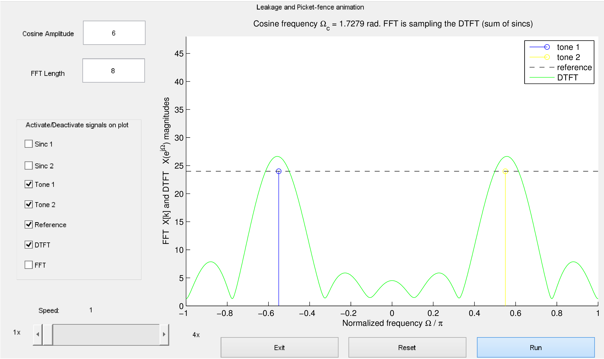
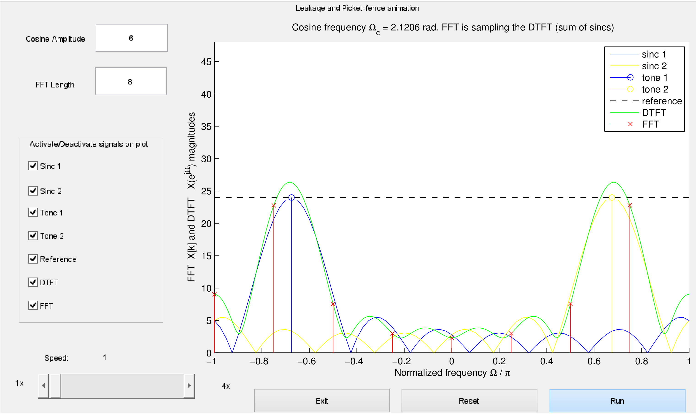
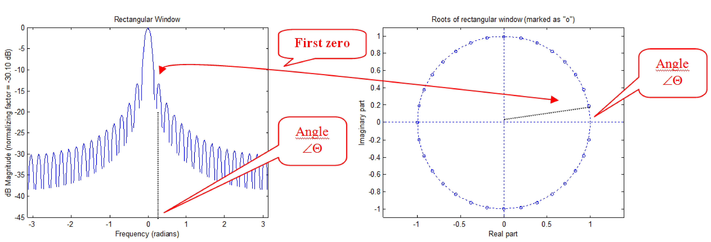
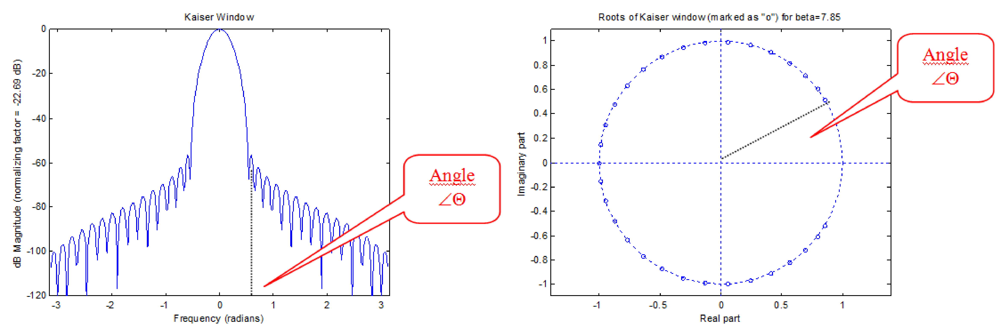
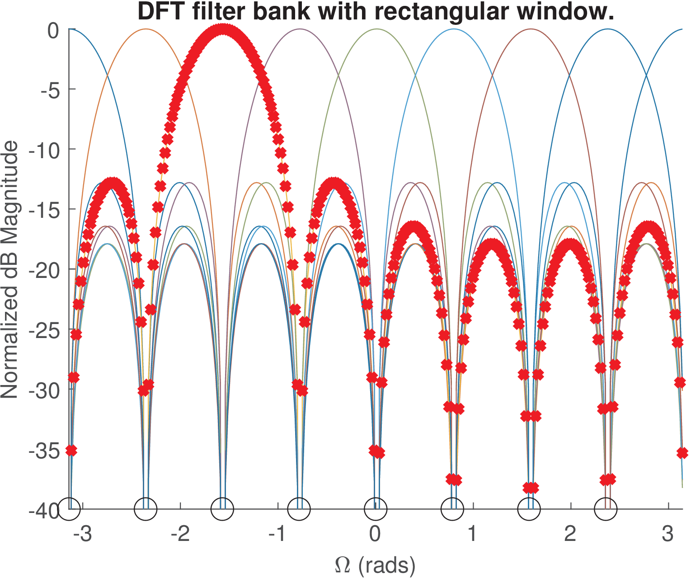
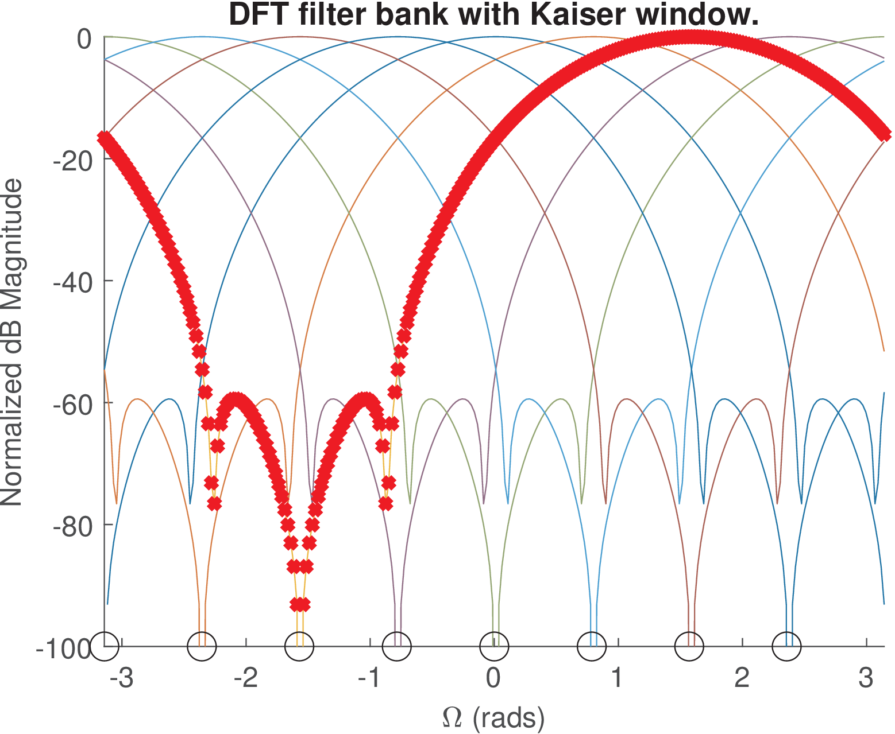
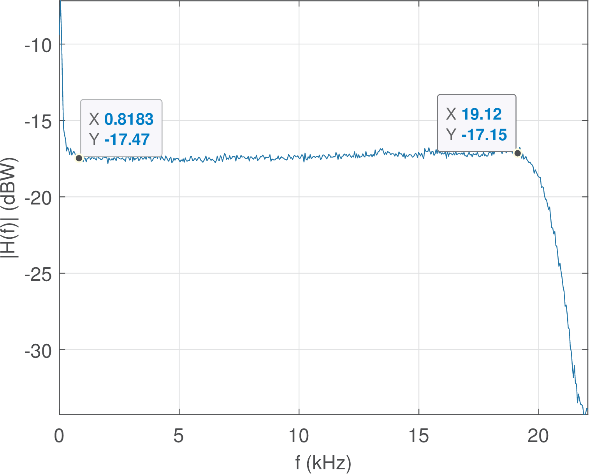
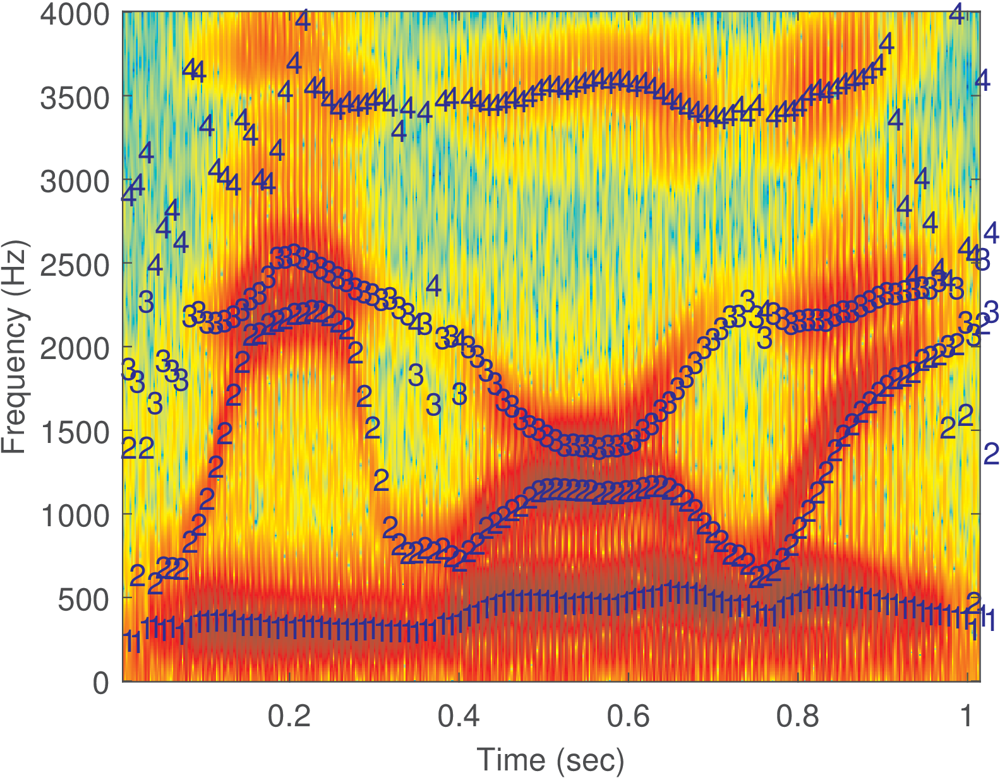

4.10 Applications
Application 4.1. FFT leakage and picket-fence effects. This application explores a script that illustrates the results discussed in Section 4.3.6 and can be found at folder Applications/FFTLeakagePicketFenceEffects. The version ak_window4_noGUI.m runs on both Matlab and Octave while ak_window4gui.m incorporates a Matlab GUI.10
Basically the software varies the frequency of a cosine and compares the magnitudes of its DTFT and FFT. The goal is to show how the cosine is represented by two frequency components , and the interaction of the corresponding “positive” and “negative” sinc functions for composing the DTFT by their sum. Also, the script indicates how the FFT discretizes the frequency axis, which creates the picket-fence effect, and the leakage that an FFT user observes when does not coincide with a frequency bin.
Figure 4.23 is a screenshot when the cosine frequency is rad and the corresponding DTFT magnitude. The cosine is represented by two spectral lines (tones), at normalized frequencies . The (dashed) reference line indicates the value given the FFT-length and cosine amplitude . Note that the DTFT, which is the sum of two sinc functions, surpasses this reference value for normalized frequencies around .

Figure 4.24 corresponds to a situation where rad and the FFT magnitude values are superimposed to the DTFT. Besides, the two sinc functions centered at normalized frequencies are also displayed such that one can see the DTFT being composed by their summation.

In Figure 4.24, does not coincide with an FFT bin and the leakage is observed by the FFT values, which are samples of the DTFT. The picket-fence is clearly seen because in this case the resolution is low, and only DTFT values in the range are obtained by the FFT. Increasing alleviates this effect. The reader is invited to run the code with different settings.
Application 4.2. Using Welch’s method to estimate the mean square (MS) spectrum. As explained, to decrease the variance of the estimated spectrum, it is useful to adopt Welch’s method. In this case, one should consider the effect of the window of samples on the estimation.
In Matlab/Octave it is convenient to estimate a MS spectrum using pwelch, which takes care of segmenting the input signal. Matlab has support for MS spectrum estimation using pwelch while Octave does not.
When used for PSD estimation, pwelch.m scales the periodogram dividing it by the energy of the window:
In contrast, when estimating a MS spectrum, the periodogram should be divided by the square of the window DC value
The reason is that the window is convolved with each power spectrum peak and should be 1 to avoid modifying the peak height.
Matlab has the undocumented option of invoking pwelch.m with the argument ’ms’ for MS spectrum, such as in:
H = pwelch(x,window,[],[],Fs,'twosided','ms');
which uses the adequate scaling factor to estimate a MS spectrum.
Because ’ms’ is not supported in Octave, Listing 4.28 illustrates that a workaround is to multiply the estimated spectrum by .
N=1024; x = transpose(10*cos(2*3/64*(0:N-1))); %generate a cosine Xk = (abs(fft(x,N))/N).^2; %MS spectrum: |DTFS|^2 Fs = 2*pi; myWindow = hamming(N); %specify Fs and a Hamming window H = Fs*pwelch(x,myWindow,[],N,Fs,'twosided');%Welch's estimate. Third 5%parameter is [] because in Matlab is num. samples while Octave is % H = H * sum(myWindow.^2)/sum(myWindow)^2; %scale for MS plot(Xk,'x-'), hold on, plot(H,'or-') %compare
Using either Matlab or Octave, this code provides a pair of peaks of approximately 25 W for H, estimated via Welch’s method. Note that the cosine is not bin-centered and there is leakage. Matlab users11 can try a flat top window in place of Hamming’s with the command myWindow=flattopwin(N). When estimating the MS spectrum, a flat top window helps because it widens any peak in the original spectrum, such that the wider range of values has more chances of coinciding with a FFT bin. In other words, the flat top is not accurate to locate the sinusoid in frequency (bad frequency resolution) but helps when the goal is to find the sinusoid amplitude.
Another example with a sinusoid that is not bin-centered is provided below. It allows to observe the better performance of averaging segments of the signal using pwelch.m, as indicated in Listing 4.29.
N=1000; x = 10*cos(2*pi/64*(0:N-1)); %generate a cosine Xk = (abs(fft(x,N))/N).^2; %MS spectrum |Xk|^2 Fs = 2*pi; window = hamming(128); %specify Fs and window H=2*pi*pwelch(x,window,[],128,Fs,'twosided'); %Welch's estimate 5H = H * sum(window.^2)/sum(window)^2; %scale for MS disp(['Peak from pwelch = ' num2str(max(H)) ' Watts']) disp(['Peak when using one FFT = ' num2str(max(Xk)) ' W'])
This code informs that Xk has peaks of 15.66 W and H (estimated via pwelch.m with segments of samples) has peaks of 25.02 W (recall that the correct value is 25 W). In this and many practical cases, averaging windowed segments with pwelch.m leads to better results than using a single FFT.
Application 4.3. Relation between roots location and spectrum. A window is used to multiply a signal in time-domain, but for the sake of observing its spectrum, it can be interpreted as the impulse response of a FIR filter, which does not have finite poles, only zeros. Under this assumption, there is an interesting relation between the zeros of the windows, and its spectrum .

Figure 4.25 shows the spectrum (left plot) of a rectangular window with and the roots (right plot) of this window. This plot outlines that there are zeros (the amount of roots of a polynomial of order ) and the width of the main-lobe is obtained from the angle (in this case, rad) of the first root, given that there is no root at and the roots are uniformly spaced around the unit circle.

Figure 4.26 shows that a greater concentration of zeros in the region of the main-lobe, allows the Kaiser window (with ) achieve a very small first side-lobe. However, the width of the main-lobe increases considerably when compared to the rectangular window in Figure 4.25, due to the increase of . In summary, the rectangular window has the smallest main-lobe, but its first sidelobe level is just dB below the main-lobe level. On the other hand, the Kaiser window has a wider main-lobe, but this window has very small sidelobe levels.
Application 4.4. FFT Interpreted as a Filter Bank. Filter banks are often used for performing spectrum analysis and signal synthesis. A DFT can be seen as a uniform filter bank due to the fact that all filters have the same bandwidth.
The interpretation of FFT and other transforms as filter banks lead to improved insight. For example, the good result obtained by the rectangular window in Figure 4.4 is due to a particular property of its side-lobe structure: all side-lobes are zero in the center of the bins. When the spectrum being analyzed has non-zero components only in bin centers, the leakage due to the side-lobes will not appear in the final FFT result. The leakage could be seen in the DTFT though.


Figure 4.28 and Figure 4.27 indicate the filter banks corresponding to an FFT with rectangular and Kaiser windows, respectively. The rectangular has larger side-lobe levels, but all of them achieve a zero in the bin centers. The Kaiser window does not have side-lobes with amplitude equal to zero in the bin centers, but these side-lobe levels are very small. Modifying the scripts that obtained these figures allows to show the scalloping loss of each window, as discussed in [?].
Application 4.5. Smoothing an FFT result by segmenting the signal and averaging the individual FFTs. When the task is to calculate the FFT of a noisy signal with samples, it helps to segment it in blocks and average the result of FFTs. This is a basic strategy in spectral estimation, which is adopted in Welch’s method, for example. Here, the noisy signal is assumed to be the one recorded in the file impulseResponses.wav, as suggested in Application 1.4.
For isolating the response to an impulse using the signal described in Application 1.4, after zooming Figure 1.63 it was decided to consider the range of samples from to 22050 (given the third impulse was generated at ). This way the selected signal does not have many samples with small amplitudes before it actually begins.
In case you do not have available the companion file impulseResponses.wav and cannot generate yours due to the lack of a loopback cable, then use the signal suggested in the script below by changing the if instruction in line 3:
nstart=12650;%chosen after zooming the signal in impulseResponses.wav nend=22050;%this was the chosen segment. Adjust them for your data! if 1 %if you have impulseResponses.wav available [h,Fs,b]=readwav('impulseResponses.wav'); 5 h=double(h(nstart:nend)); %segment and cast h to double else %use signal with few samples extracted from impulseResponses.wav duration = floor(nend-nstart+1); %same duration as h above h =[-1051, 4155, -32678, -11250, 5536, -4756, 2941, -3162]; h = [h zeros(1,duration-length(h))]; %pad with zeros 10 h = h + 10*randn(1,length(h)); %add some noise Fs=44100; %chosen sampling frequency end N=1024; %number of FFT points M=floor(length(h)/N); %number of segments of N samples each 15h=h(1:N*M); h=h(:); %make sure h is a column vector with N*M samples xsegments=reshape(h,N,M); %segment h into M blocks X=abs(fft(xsegments)); %obtain the magnitude for each segment X=mean(transpose(X)); %transpose: the mean has to be over the FFTs f=Fs/N*(0:N/2)/1000; %create abscissa in kHz. Fs/N is the bin width 20plot(f,20*log10(X(1:N/2+1))),xlabel('f (kHz)'),ylabel('|H(f)| (dBW)')
Instead of the FFT, another option is to use the command pwelch(h,N,N/2,N,Fs) to observe the PSD.

Figure 4.29 is the result obtained by running the previous script. It can be seen that the filters along the processing chain that includes the DAC and ADC present strong attenuation after 20 kHz and extra gain from DC to approximately 800 Hz. Choosing different than 44.1 kHz would move the cutoff frequencies of the anti-aliasing and reconstruction filters. These filters are analog, but are programmable in the sense that can be modified by software (after the user chooses a new in Audacity, for example). For example, switched-capacitor filters use a technology that allows this programmability feature. To check this feature in your sound board, repeat the experiment with and 22,050 Hz.
Another alternative for obtaining an estimate of is to use a white noise as input to the system and use Eq. (4.36).

Audacity can conveniently generate white noise via the menu “Generate - Noise”. Another option is to create the noise in Matlab/Octave, save as a WAVE file and read it with Audacity. Figure 4.30 was obtained using the former procedure to generate noise, play it back and record the system response using a loopback cable as for Figure 4.29. Then, the transient in the beginning of the recorded signal was discarded and approximately 32 thousand samples were saved as a WAVE file for processing in Matlab/Octave via the script:
[x,Fs,b]=readwav('filteredNoise.wav'); %recorded output N=1024; %number of FFT points M=floor(length(x)/N); %number of segments of N samples each x=x(1:N*M); x=x(:); %make sure x is a column vector with N*M samples 5xsegments=reshape(x,N,M); %segment x into M blocks X=abs(fft(xsegments)); %obtain the magnitude for each segment X=mean(transpose(X)); %transpose: the mean has to be over the FFTs f=Fs/N*(0:N/2)/1000; %create abscissa in kHz. Fs/N is the bin width plot(f,20*log10(X(1:N/2+1))),xlabel('f (kHz)'),ylabel('|H(f)| (dBW)')
Figure 4.30 and Figure 4.29 are consistent but differ with respect to ordinate values and variance of the estimate. Eq. (4.41) states that the input noise level scales the output PSD. Take this in account and repeat the experiment with an input noise of controlled power, such that you can use Eq. (4.41) to properly scale the estimate and make the values closer to the ones in Figure 4.29. Investigate other factors that improve the relation between the two figures.
Application 4.6. Speech formant frequencies via LPC analysis.
An interesting application of LPC analysis is to estimate the formant speech frequencies. The formants are related to the peaks of the spectrum of a vowel sound and are relatively well-defined in a sentence such as “We were away”, which does not have consonant sounds.

Listing 4.32 was used to obtain Figure 4.31.
[s,Fs,numbits]=readwav('WeWereAway.wav'); %read wav file s = s - mean(s(:)); %extract any eventual DC level Nfft=1024; %number of FFT points N = length(s); %number of samples in signal 5frame_duration = 160; %frame duration step = 80; %number of samples the window is shifted order = 10 %LPC order numFormants = 4 %desired number of formants %calculate the number of frames in signal 10numFrames = floor((N-frame_duration) / step ) + 1 window = hamming(frame_duration); %window for LPC analysis formants = zeros(numFrames,numFormants); %pre-allocate for i=1:numFrames %go over all frames startSample=1+(i-1)*step; %first sample of frame 15 endSample=startSample + frame_duration - 1; %frame end x = s(startSample:endSample); %extract frame samples x = x.* window; %windowing a = aryule(x,order); %LPC analysis poles = roots(a); %Roots of filter 1/A(z) 20 freqsInRads = atan2(imag(poles),real(poles)); %angles freqsHz = round(sort(freqsInRads*Fs/(2*pi)))'; %in Hz frequencies=freqsHz(freqsHz>5); %keeps only > 5 Hz formants(i,:) = frequencies(1:numFormants); %formants end 25window = blackman(64); %window for the spectrogram specgram(s,Nfft,Fs,window,round(3/4*length(window))); ylabel('Frequency (Hz)'); xlabel('Time (sec)'); hold on; t = linspace(0, N / Fs, numFrames); %abscissa for i=1:numFormants %plot the formants 30 text(t,formants(:,i),num2str(i),'color','blue') end
The code illustrates how a long signal can be segmented via windowing. It is interesting to notice that the Hamming window is typically adopted in LPC analysis, and the code uses another (Blackman) window for the spectrogram. An LPC of order 10 was used to estimate four formants. The code eliminates frequencies below 5 Hz because LPC sometimes returns real poles that correspond to a zero frequency.
Figure 4.31 indicates that at the sentence endpoints and at the pauses between words, when the vowel sounds are not well-defined, the formant estimation is noisy. In the middle of the sentence, around 0.5 s, the four formants are clearly identified. In the region around 0.2 s and also the one around 0.8 s, the estimation is problematic because more than four formants are necessary to describe the signal.
Application 4.7. Spectral distortion. When the task is to compare two PSDs, the spectral distortion (SD) can be used. It is given by
|
|
(4.66) |
where and are discrete-time signals and and their respective PSDs. SD is given in dB and corresponds to the root mean square value of the error between and over frequency . It should be noted that the SD can also be used to compare two MS spectra.
Because both the PSD and MS spectrum are normalized versions of the squared magnitude of a DTFT and the SD divides two spectra, any normalization factor is canceled out in Eq. (4.66). Therefore, Eq. (4.66) can be written in terms of DTFTs as
where and are the respective DTFTs.
Eq. (4.68) can be approximated by
|
|
(4.69) |
where and are the respective -points FFTs. Listing 4.33 illustrates a software routine to calculate SD.
function distortion = ak_spectralDistortion(x,y,Nfft,thresholdIndB) % function distortion = ak_spectralDistortion(x,y,Nfft,thresholdIndB) %Returns the spectral distortion (SD) in dB as defined at % http://en.wikipedia.org/wiki/Log-spectral_distance 5X=abs(fft(x,Nfft)); %Calculate magnitude values of DTFTs Y=abs(fft(y,Nfft)); logX=20*log10(X); %Convert to dB and use factor=20 to convert ... logY=20*log10(Y); %DTFTs into power spectra using log(X^2)=2*log(X) maximumValue = max([max(logX) max(logY)]); %Avoid numerical problems 10minimumValue = maximumValue - thresholdIndB; %such as log of 0 logX(logX<minimumValue)=minimumValue; %Impose the floor value logY(logY<minimumValue)=minimumValue; distortion = sqrt(mean((logX-logY).^2)); % SD as a mean-squared error
One issue when using logarithms is to deal with argument values equal to zero. For example, in Matlab/Octave, log(0) gives -Inf and can lead to NaN after operations such as 0*log(0). To avoid numerical problems, Listing 4.33 uses a floor value based on a threshold to limit the minimum value of an argument for logarithm functions. Some lines of Listing 4.33 that are not being shown also deal with special situations and are an example of how to prevent problems via proper exception treatment when using software. For example, some lines of Listing 4.33 deal with the situation where both signals and have only zero values.
Application 4.8. Spectral distortion of speech autoregressive models. In speech coding applications, the signal is segmented into frames. Given two speech signals, it is discussed here how to compare their spectra using AR models in a frame-by-frame basis. While Application 4.7 used one value of SD for the whole duration of the signals, here the SD is calculated for each frame.
The pair of signals can be found at folder Applications/SpeechAnalysis. One of the files correspond to the digit “eight” spoken by a male speaker. The other file was generated by a computer (more specifically, using the Klatt speech synthesizer) and aims at sounding indistinguishable from the first, or target speech.
Listing 4.34 shows a code snippet with the part that segments the signals into frames and calculates the SD as described in Listing 4.33 and also two other SD versions. These SD versions are comparisons between autoregressive models and are calculated with the function ak_ARSpectralDistortion.m. Listing 4.34 uses the array isNotSilence, which was obtained from function Applications/SpeechAnalysis/endpointsDetector.m, to avoid computing the SD values for frames that have a low power and can be considered as silence, not speech.
for i=1:M %do not use last frame, because it may use zero padding if isNotSilence(i)==0 continue; %skip because this is a silence frame end 30 firstSample = 1+(i-1)*S; lastSample = firstSample + L - 1; x=target(firstSample:lastSample); %frame from target signal y=synthetic(firstSample:lastSample); %frame from the other signal sd_all(i)=ak_spectralDistortion(x,y); 35 sdAR_all(i)=ak_ARSpectralDistortion(x,y,10,Nfft); sdARp_all(i)=ak_ARSpectralDistortion(x,y,10,Nfft,60,1); disp(['#' num2str(i) ': SD=' num2str(sd_all(i)) ', AR SD=' ... num2str(sdAR_all(i)) ' and AR SD (power)= ' ... num2str(sdARp_all(i))]); 40end
Autoregressive models are widely used in speech coding applications and their quantization is often evaluated according to the AR version of the SD. In this context, transparent quantization is obtained when the average SD is not larger than 1 dB, having no
outliers with SD larger than 4 dB and at most 2% of frames with SD between 2 and 4 dB.